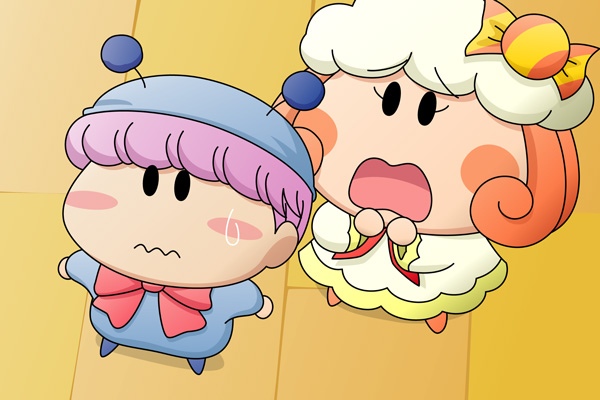

夕方も時間があっという間に過ぎていき、二回目の夕食の時間が近づいてきました。お腹を空かせた妖精たちはこの時を待っていたのかのように次々と食堂に集まっていきます（実際は待っていたのですけど）。
ミルモ「なんだよ、誰もいねーじゃねーかよ」
リルム「わたくしたちが早いのでは？」
ミルモ「集団行動は『５分前行動』が基本だっていうのに・・・。
ったく分かってねーなぁ」
リルム「まぁまぁ、ミルモ様。
イライラしていると夕食のお菓子が不味くなってしまいますわ」
クモモ「そうクモ。
６時になればみんな集まるクモ」
少しフライング気味に食堂へやって来たミルモとリルムは、席に座ってぶつぶつ言いながらみんなが揃うのを待っています。二人の目の前にはヤシチとパピィの分を除く１０人分の食事が並べられていて、いつものようにヤマネの分だけはお菓子ではなくご飯が用意されていました。
アクミ「ミルモはお菓子の時間だけは正確だな」
ミルモ「んだとアクミ！！もういっぺん言ってみろぉ！
オレは今腹が減ってイライラしてんだっ」
アクミ「上等じゃん。今ここであたいと勝負するか？」
リルム「二人とも・・・落ち着けって言ってるのが聞こえないのですか・・・？」
ミルモ＆アクミ「は、はい・・・」
お腹が空いてイライラしているのはリルムも同じのようです。アクミに続いて、他の妖精も続々と食堂へ集まってきました。
サスケ「おぉ～、夕食もまた豪華だぜ」
ハンゾー「こんな食事が明日も明後日も続いて欲しいのら～」
ヤマネ「サスケ先輩、ハンゾー先輩、置いていかないで欲しいでございます～」
パンタ「夕ご飯もミルモお兄ちゃんと一緒に食べるですっち～」
ムルモ「皆しゃん集まるのが早いでしゅ」
クモモ「あと一人は・・・アロマさんクモね」
ムルモ「アロマしゃんはマイペースでしゅからね」
ムルモとクモモは、アロマが食堂へやって来るまで席に座らずに立って待っていました。待つこと１分、２分、３分・・・しかしなかなかアロマはやって来ません。そして１０分が過ぎた頃、ムルモがクモモに向かって言いました。

ムルモ「アロマしゃん、ちょっと遅すぎじゃないでしゅか？」
クモモ「そうクモね。お昼寝しているかもしれないから、
部屋へ呼びに行った方がいいクモね」
ムルモ「・・・何だかすごく嫌な予感がするでしゅ・・・」
ストーリーはだんだんと佳境を迎えてきていますが、また新たな展開を盛り込んでみました。果たしてアロマの安否はいかに！？ムルモの不安は的中するのか！？次回はアロマの部屋が舞台になる・・・予定です。
今回の絵は斜め上からの見下ろし視点ですが、いつもとは違った視点で妖精を描くとまた難しいです。最難関の下からの見上げ視点も今度チャレンジしてみたいと思います。
(2008/6/8)